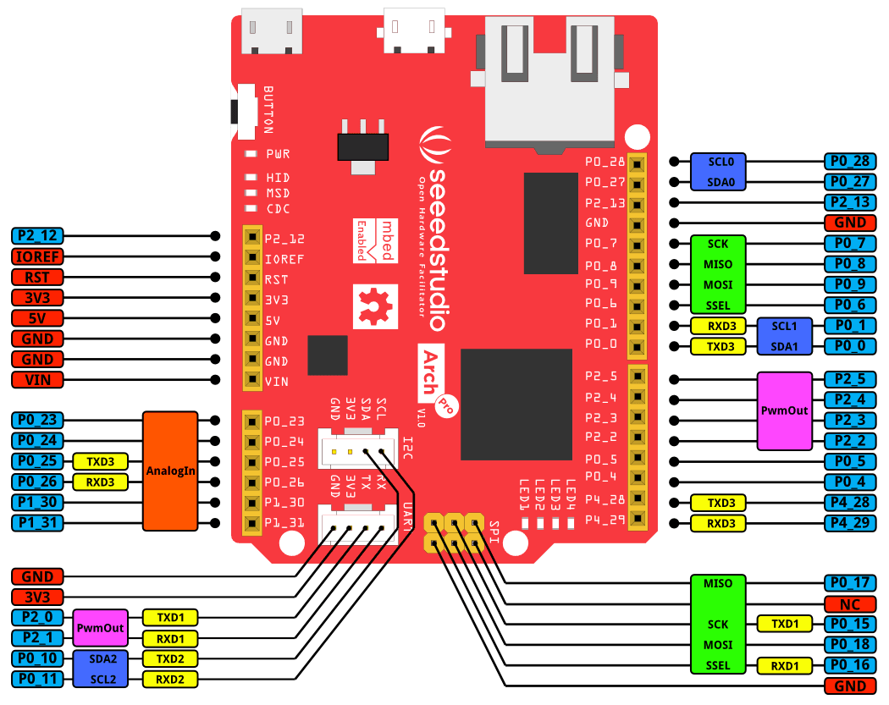
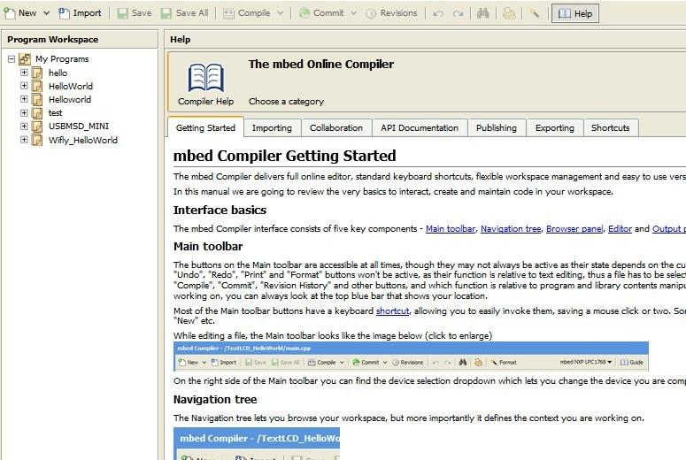
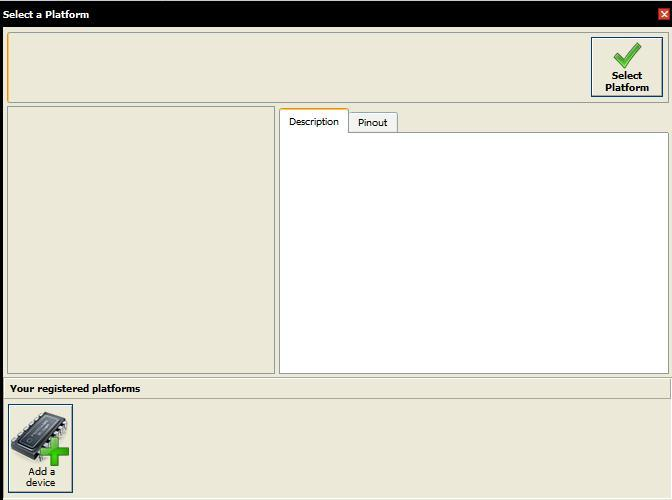
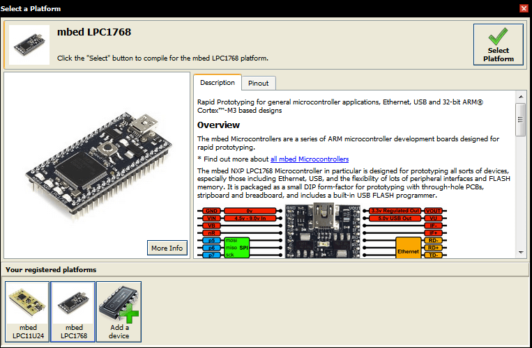

Arch Pro
Arch Pro is an mbed enabled development board for rapid prototyping. It is a variant of mbed LPC1768 with built-in Ethernet, USB Host/Device, Grove connectors and Arduino form factor. With a variety of Shield and Grove modules and lots of software libraries for Arch Pro, you can implement Ethernet, USB Host/Device and NFC applications rapidly and easily.

Features
- Online development tools
- Easy to use C/C++ SDK
- Handy libraries
- Arduino form factor with two Grove connectors
- Drag-n-drop programming
- Debug using CMSIS-DAP
- USB virtual serial for communication
Specification
Specification
| Parameter |
Value/Availability
|
| MCU |
NXP LPC1768 variant (with ARM Cortex-M3 core)
|
| Clock Speed |
100 MHz
|
| Flash |
512 kB
|
| RAM |
64kB
|
| UART |
4 No.s
|
| I2C |
3 No.s
|
| SPI |
2 No.s
|
| Ethernet |
Yes
|
| USB Host/Device |
Yes
|
Platforms Supported
Application Ideas
Hardware Overview

There is [a monochrome version] for you to print.
Note:
The Arch Pro silkscreen for the Grove connectors is labeled 3V3 on top of the PCB and 5V on the underside. Grove Vcc is by default 3V3, but can be changed to 5V by moving R50 to R51.
SPI VCC pin can be set by populating R52 (3V3) or R53 (5V) with 0R - neither populated by default.
Getting Started
As the Arch Pro is compatible with mbed LPC1768, one can use the mbed C/C++ SDK, libraries and online development tools to rapidly build a prototype.
Here we show how to light up an LED. This can be done in less than 10 minutes.
Step one： Sign up for an mbed account.
- Open mbed.org, click Login or signup. If you have already registered, please click login directly.
Step two： Enter online development tools.
- Click Compiler， it opens the online mbed IDE. Before programming, it is better to read the mbed Complier Getting started.

Step three：Edit code.
- Click "New" in the left top corner to create a Program and edit a blink program in main.cpp file.
#include "mbed.h"
DigitalOut led1(LED1);
int main() {
while(1) {
led1 = !led1;
wait(0.5);
}
}Step four： Add a device.
- Click ”No device selected” in the top right corner, then click ”Add a device” button in the bottom left as seen in the picture below.
Note: If you have already used an mbed device, it will be seen in the top right corner instead of ”No device selected”.

- A pop-up page appears with a list of devices as shown below. Select ”mbed LPC1768”.
- Enter mbed LPC1768 page and click ”Add to mbed Compiler”. Now you have successfully added Mbed LPU1768. Return to mbed compiler page and click ”No device selected”. After you click "LPC1768" in the bottom left corner, a screen appears as shown below.

- You can see the selected board in mbed online compiler after clicking ”Select Platform”.
Step five： Compile, download.
- Click "Compile". On successful compilation, the mbed IDE generates a bin file. Save the bin file on your PC.
Step six： Update firmware.
- Connect the USB interface (next to 'BUTTON') of Arch Pro to your PC using a USB Micro B cable; It automatically appears as a USB device named MBED.
- Copy the generated bin file to MBED device (on your PC). Now the USB device disappears and reappears.
- Press BUTTON of Arch Pro, you will see an LED flashing.
Debug
To enable SWD debug or to get debug message through USB Virtual serial, please install the driver from mbed.
Update or Restore Firmware
The latest firmware version for the Arch Pro is v0221 built on Jan 28 2015. To check your firmware version and build date, open the MBED.HTM or DETAILS.TXT of your MBED disk in a text editor.
To update:
- A Windows or Linux computer is needed.
- Download the latest firmware.
- Press and hold the Arch Pro's BUTTON and power it ON.
- A disk named MBED LOADER will appear.
- Drag-n-drop the downloaded firmware into the disk.
Notes
- LocalFileSystem does not work:
- As the Arch Pro does not have external flash to store files, the LocalFileSystem is not available for this board.
- P0_27 & P0_28 do not work with DigitalOut:
- P0_28 & P0_27 are open-drain digital I/O for compatible with I2C. External pull-up resistors are needed to provide output functionality.
- USB Serial Communication:
- In Windows, install the mbed Windows serial port driver to use USB Serial Communication. Have a look at Windows Serial Configuration
Resources
Help us to make it better
Copyright (c) 2008-2016 Seeed Development Limited (
www.seeedstudio.com /
www.seeed.cc)
This static html page was created from http://www.seeedstudio.com/wiki

{kind=link}